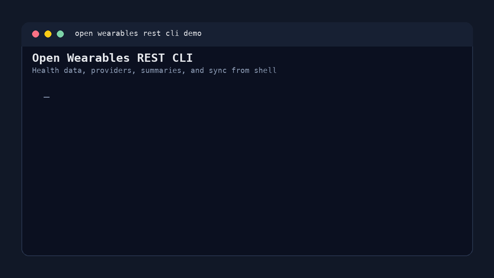
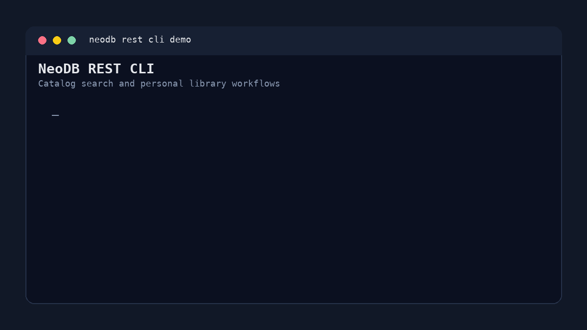
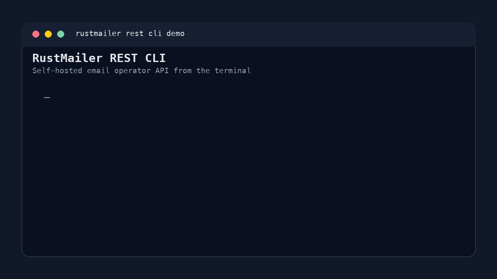
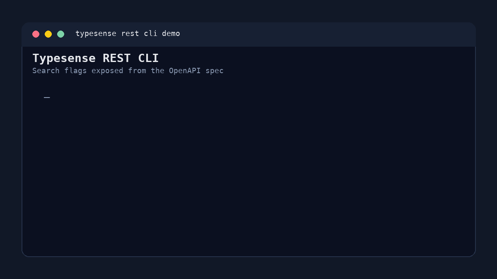
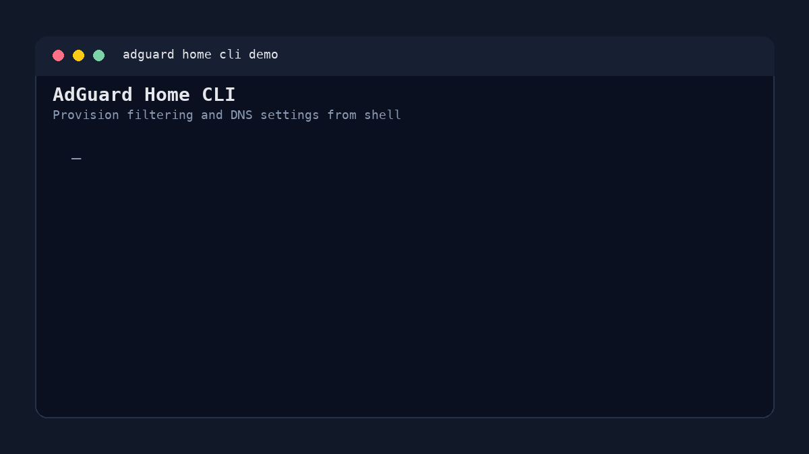
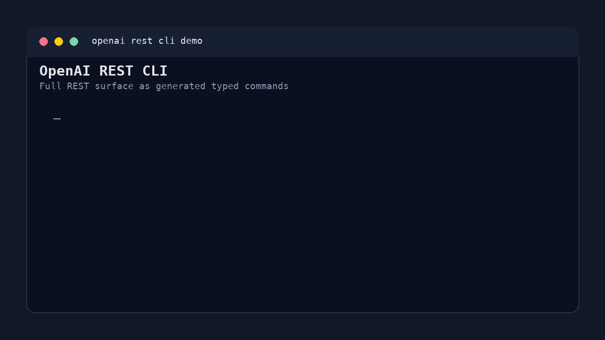

These terminal demos show real command surfaces generated from OpenAPI specs. Each wrapper links back to the generated package repository.
Provider discovery, sync/debug workflows, timeseries APIs, and webhook/event surfaces.

Catalog search, shelf, collection, review, tag, and personal data workflows.

Self-hosted email operator workflows across accounts, mailboxes, messages, hooks, and system endpoints.

Collections, points, vector search, snapshots, and database operations.
Indexes, documents, search, settings, tasks, and API keys.
Collections, documents, search flags, aliases, keys, analytics, and conversations.

Filtering, clients, DHCP, rewrites, TLS, stats, and admin operations.

Assets, albums, libraries, users, search, tags, server config, and upload workflows.
Chat, embeddings, files, vector stores, batch, fine-tuning, images, audio, and more.
